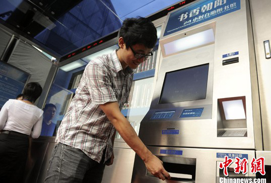

朝阳区的24小时自助图书馆！
发布时间：2013-7-19 17:13
8月31日，10台可供百姓自助借还图书的24小时自助图书馆亮相北京市朝阳区。每套“自助图书馆”系统酷似ATM机，可实现1000册以上的图书容量，凭借一张二代身份证就可以申办北京市公共图书馆联合读者卡，市民可实现全天候自助借还图书。未来朝阳区将建成200台，实现43个街乡全覆盖网络。
24小时自助图书馆类似于方便快捷的ATM取款机，市民今后在街头也能自助借阅图书。昨天，朝阳区首批10台“书香北京”24小时自助借书机开始“值勤”，市民借阅图书不必再跑图书馆。 记者昨天上午在地铁10号线双井站出口处看到，自助借书机长约4米、宽1米多，5层书架上面整齐码放着哲学、经济、文学、军事等不同类别的图书近千册，每本书均有一个由4位数组成的代码。“只要持有一张本市公共图书馆‘一卡通’即可免费享受自助借阅，每人每次可借阅3本书。书籍借阅期是28天，到期可以在借书机上续借一次。”朝阳区文化委工作人员现场演示了一遍借书流程，刷卡登录之后，仅需在电脑触摸屏上输入图书代码，不到10秒钟，书架上的图书自动移到出口处。 借书机每天可“工作”24小时，不管是在图书馆还是自助借书机借阅的图书，均可到任何一台机器上自助归还，实现“通存通取”。借书机内部的电脑设备与朝阳区图书馆实现联网，书架空置率达到40%时，将会自动提醒工作人员前往增添新书。同时，破损或陈旧的书也会有专员进行下架处理。


朝阳区24小时自助图书馆
地址：朝阳区朝外金台里17号
服务热线：85992534